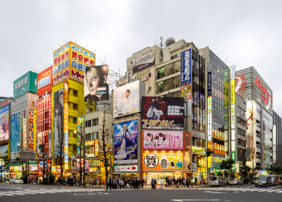
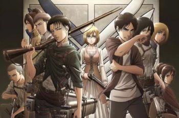

For 3 years straight, I would go to New York's Comic Con and LA's Anime Expo. Last year was of course a no go due to Covid, but I'm hoping this year will go back to normal.
My dad and I took a guys trip to Japan. We ate tons of my favorites: ramen, udon, and sushi. Then we went to the famous Akihabara Crossing in Tokyo... it was like the heavens opened! Akihabara has 10 floors filled with shops specializing in anime, manga (anime comic books), and video games!
One of the classics! This is the 1st anime I had my family watch. I can proudly say my sister is just as hooked as I am.

This is the second anime I watched. Only my sister has watched it along with me. We have watched all 4 seasons of the anime and are waiting to watch season 5 this year.

Ultimate favorite! Can't wait for season 3!